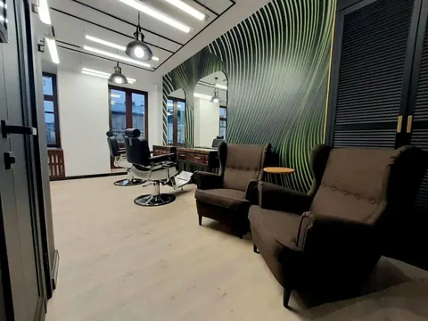
Дворцовый проспект, 14/9
Ломоносов, второй этаж, помещение 16
+7 952 261-66-99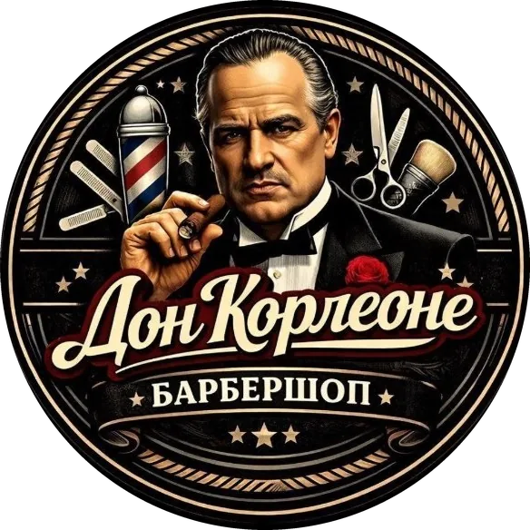
Барбершоп в Ломоносове и Красном Селе. Три зала, каждый день с 10:00 до 22:00. Классическая стрижка 1 700 ₽1 500 ₽1 500–1 700 ₽, оформление бороды 1 300 ₽1 000 ₽1 000–1 300 ₽.

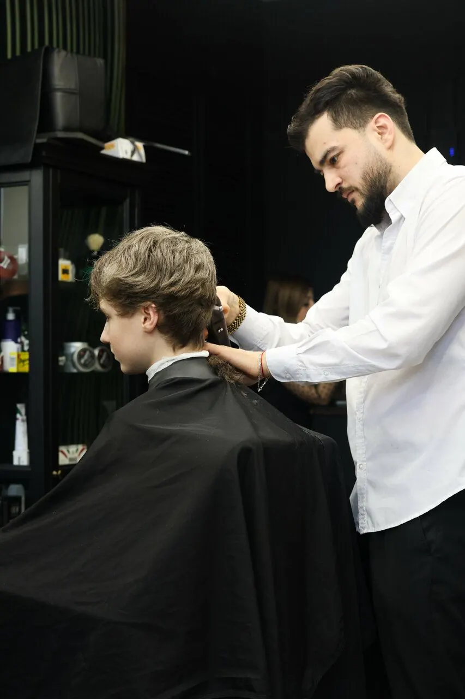

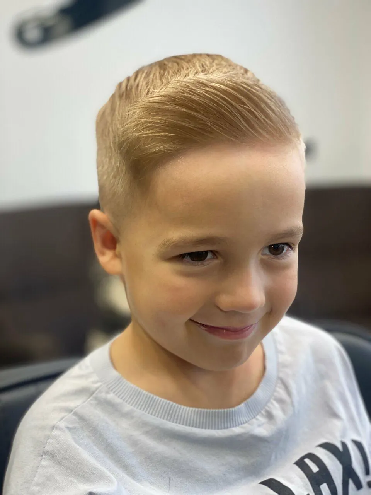
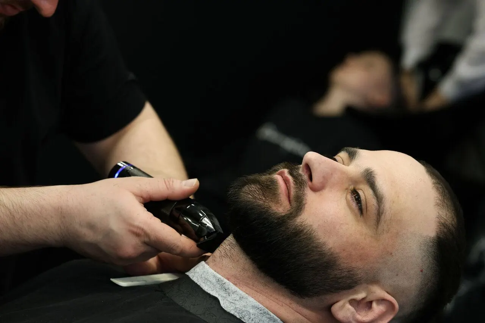
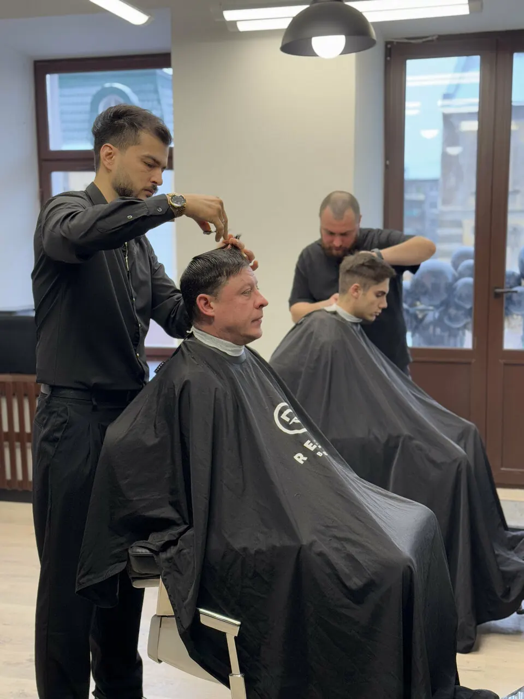
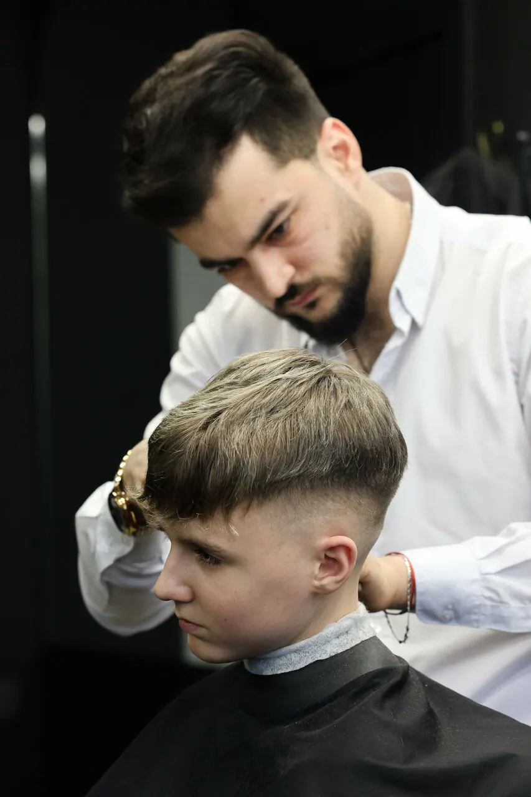
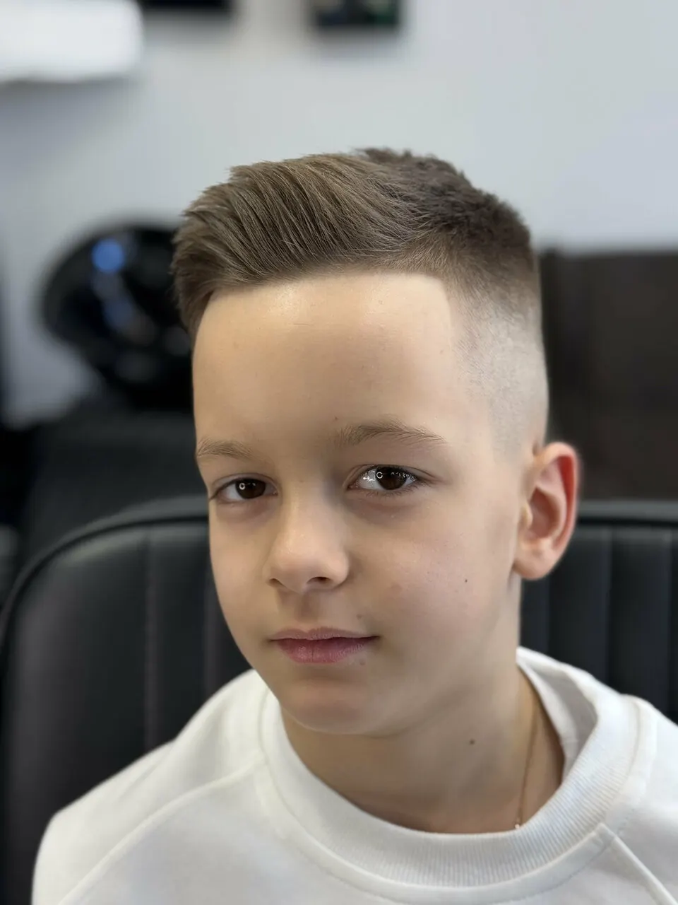
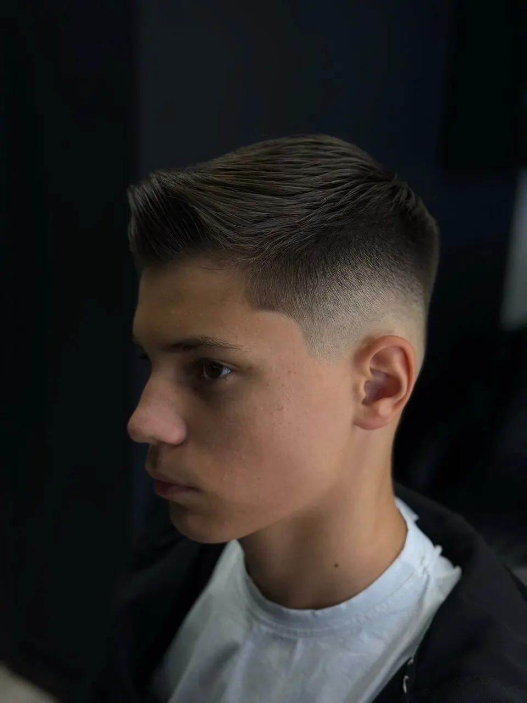
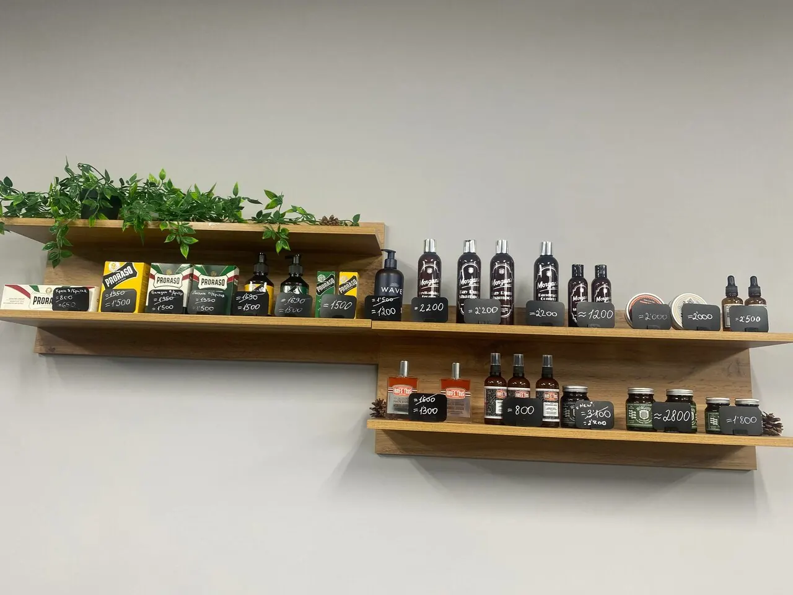
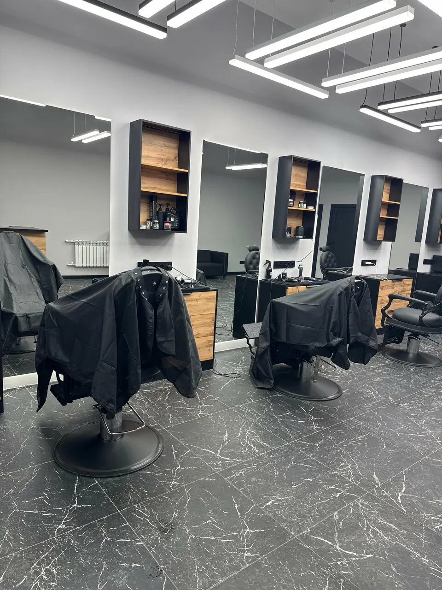
Дворцовый, 14/9. Здесь стригут Pro-барберы. Федюнинского, 14к1. Красное Село. У Pro-барбера Сержа цена выше, у барбера Бека ниже. Цены в залах разные, зал меняется переключателем наверху.
Семейная классика. Приходите вдвоём: стрижка для отца и для сына до 10 лет, чтобы выглядеть отлично и провести время вместе.
2 5002 0002 000–2 500 ₽ за двоих
Записаться вдвоёмДля детей до 10 лет. Мастера умеют найти подход даже к самым маленьким.
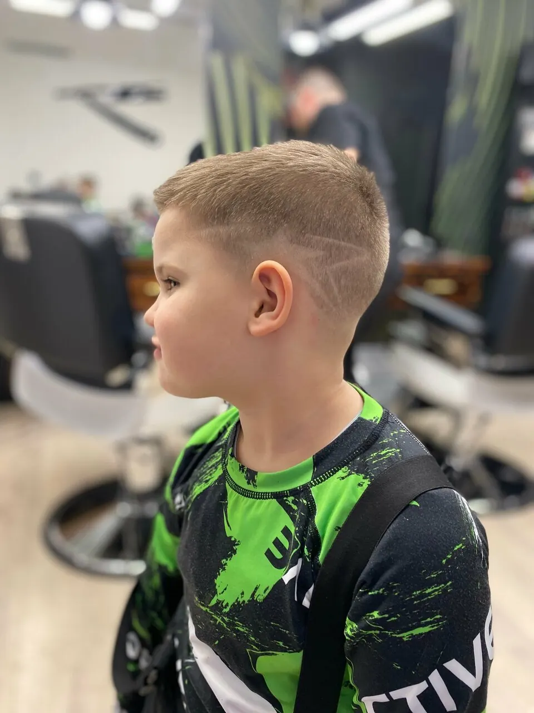
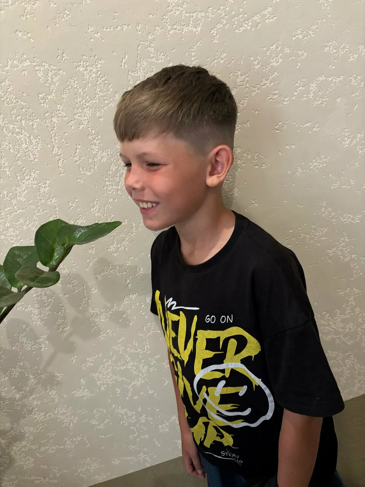
Отличный барбершоп! Были сегодня с сыном в первый раз и остались в полном восторге.
Выберите мастера и услуги. Время выберете в онлайн-записи барбершопа, той же, что на Яндекс Картах.
Отзывы с Яндекс Карт, как написаны.
Ребенок ходит стричься к данному мастеру с 1 года, в этом году нам уже будет 6 лет.
Настоящий мужской разговор, четкая стрижка и идеально выбритая линия.
Барбершоп, где ценят время клиента. Записался через приложение, пришёл — меня уже ждали.
Очень профессиональный мастер попался по имени Серж, все без лишний наставлений с моей стороны сделал быстро и качественно! Теперь только к нему!
Все отзывы на Яндекс Картах: зал на Дворцовом, зал на Федюнинского и зал в Красном Селе
Подарок, который точно пригодится.

Сертификат на стрижку, бороду или комплекс. Получатель сам выберет мастера и удобное время.
Номиналы от 1 000 до 5 000 ₽. Купить можно онлайн, сертификат действует во всех трёх залах.
Купить сертификатКлассическая и детская стрижка, оформление бороды занимают около 30 минут, стрижка с бородой около часа. Время каждой услуги указано в прайсе.
Картой, наличными или переводом.
Да. Есть детская и удлинённая детская стрижка для детей до 10 лет и комплекс «Отец + сын». К нам приходят и совсем маленькие: одна гостья водит сына к Фариду с года.
На Дворцовом проспекте работают Pro-барберы, поэтому услуги там дороже. В Красном Селе цена зависит от мастера: у Pro-барбера Сержа как на Дворцовом, у Бека как на Федюнинского. Цены каждого зала видно в прайсе: переключите зал в шапке сайта.
У зала на Дворцовом проспекте есть парковка и Wi-Fi. В зал на Федюнинского нельзя с животными, и в него не получится заехать с коляской.
Да, есть подарочные сертификаты.
Все залы работают каждый день с 10:00 до 22:00.

Ломоносов, второй этаж, помещение 16
+7 952 261-66-99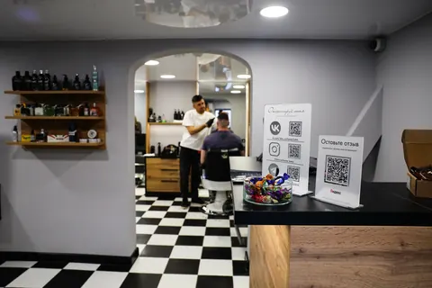
Ломоносов
+7 950 022-06-30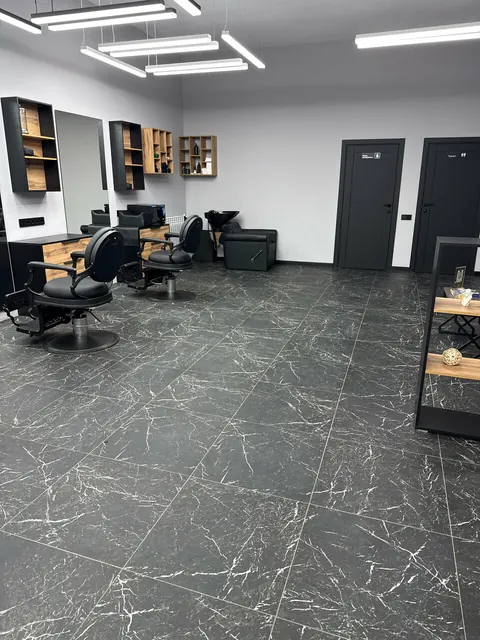
Красное Село
+7 950 009-85-82